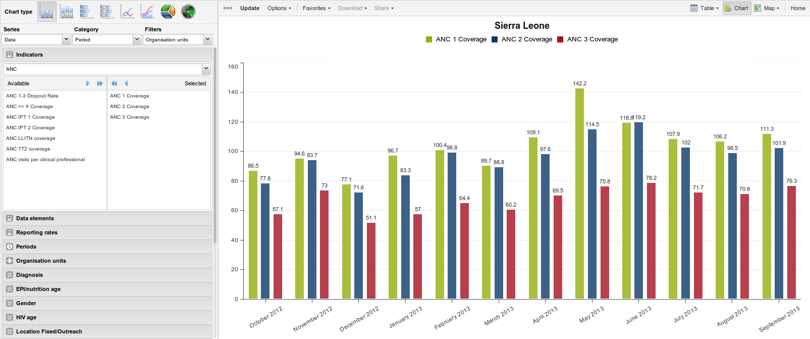

Table of Contents
The data visualizer module enables users to easily create dynamic data analysis and visualizations through charts and data tables. You can freely select content (like indicators, periods and organisation units) for your analysis. This module can be accessed by going to "Services - Data Visualizer" in the main menu. The image below shows the viewport of the module. For a quick start:
Look under the "Indicator" heading and select an indicator group from the list of groups.
Look under "Available indicators" and select a few indicators from the list by double-clicking on them.
Click "Update" in the top bar and see the chart unfold.
The data visualizer is designed firstly to be easy-to-use - you can simply select the indicators, data elements, periods and organisation units you want to include and click "Update" to get your visualization. Secondly it is designed to be fast and work well over poor Internet connections - charts are generated in the web browser and very little data is transferred over the Internet.
|  |